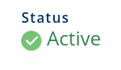
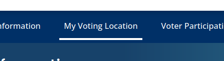
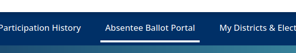
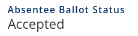

🇺🇸 Georgia Senate Runoff 2022 🇺🇸
Your vote matters
On Dec 6, 2022 you'll get a chance to vote for one of the following to be Georgia's next Senator:
- Raphael Warnock (D)
- Herschel Walker (R)
Why Is this important?
None of these candidates won 50% of the vote in the November election, and by Georgia law a runoff election is held to determine a winner.
This race determines the control of the Senate, so whichever way you lean politically it's important that you vote to ensure your desired outcome.
The last election came down to a few thousand votes.
Your vote mattersCan I still register for the Runoff Election?
No. The deadline for registering for the runoff was Nov 7, 2022.
However if you were already registered to vote before the general election, you will still be eligible to vote in the runoff.
How do I check if I'm registered?
Log in to the Georgia My Voter site using your name and birth date.
If you are registered, you'll a green ACTIVE check mark:
If you are not "ACTIVE" and you believe it is a mistake, contact the Secretary of State office immediately.
How can I find out my polling location?
Log in to the Georgia My Voter site using your name and birth date.
Click on "My Voting Location" in the top navigation.
Can I vote early?
Yes! Early voting begins on Mon Nov 28 (some counties may open up voting as early as Sat Nov 26) and ends on Fri Dec 02.
You can visit your polling locations during the following hours:
- 9AM to 5PM on weekdays
- 9AM to 4PM on Saturdays
Can I vote absentee / vote by mail ?
Yes!. You can request a mail-in ballot by filling out this form printing it, signing it, and mailing it to your county's registrar office.
NOTE: If you would like a pre-filled form that you can print and sign, the SOS site provides an online portal that will fill out form details for you.
Ballots take time to arrive and time to return, sometimes several weeks. Please request your ballot as soon as possible to avoid any delays.
How do I return my absentee ballot?
You can submit your ballot one of 2 ways:
- You can drop ballots off at any dropbox location near you. [Find a drop box near you](https://ballotbox.info/georgia/).
- You can return your ballot via USPS mail. It must arrive before 7PM on Dec 7, 2022.
What if I my Mail-In/Absentee never arrives or I need a new one?
It is possible to cancel your ballot and request a new one.
Alternatively, you can also go in person and let the polling location know you have chosen to not submit your absentee ballot (bring it with you if you have it). They will issue a provisional ballot and allow you to vote in person.
The Georgia Voter Guide has more detailed information on handling missing or voided ballots.How Do I check the status of my Mail-In/Absentee ballot?
Log in to the Georgia My Voter site using your name and birth date.
Click on "Absentee Ballot Portal" in the navigation.
Thus page will contain the history of your absentee ballot requests. If your ballot was accepted, you should see it marked as ACCEPTED.
